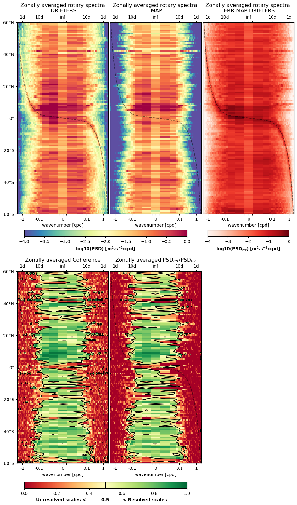

Currents - Along drifter metrics
Statistics
Check alongdrifter statistics example notebook
• Error variance

• Explained variance

• Statistics by regime
Spectral
Check alongdrifter spectral example notebook
• Rotary spectrum and noise-to-signal ratio
The frequency rotary spectra of drifter (artificial from reconstruction and real) velocity (Ee) are computed along the drifter trajectories and displayed as a function of latitude and frequency. The velocity spectra are characterized by high-energy peaks at low frequencies (<0.5 cpd), diurnal, semidiurnal, and latitude-varying inertial frequencies. This diagnostics allows to assess the methods reconstruction skills on certain specific dynamics.
For instance, the dashed line superimposed to the spectrum corresponds to the inertial frequency, hence, the energy around that dashed line is characteristic of near-inertial oscillation induced currents. This energy can be observed in the real drifter data but is also partly reconstructed by some methods (e.g., WOC product or Glorys12v1 but not in DUACS).

References
Gonella, J. (1972, December). A rotary-component method for analysing meteorological and oceanographic vector time series. In Deep Sea Research and Oceanographic Abstracts (Vol. 19, No. 12, pp. 833-846). Elsevier.
Mooers, C. N. (1973, December). A technique for the cross spectrum analysis of pairs of complex-valued time series, with emphasis on properties of polarized components and rotational invariants. In Deep Sea Research and Oceanographic Abstracts (Vol. 20, No. 12, pp. 1129-1141). Elsevier.